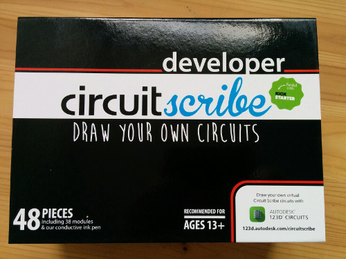
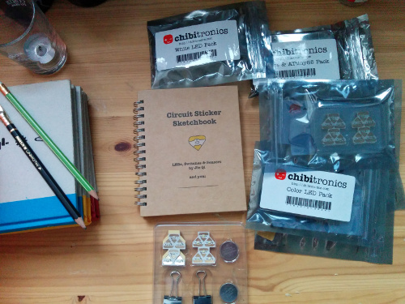
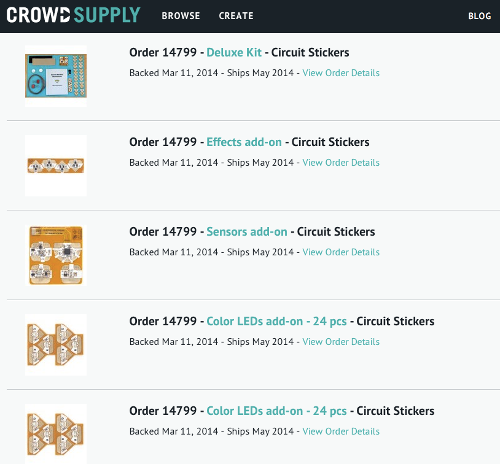
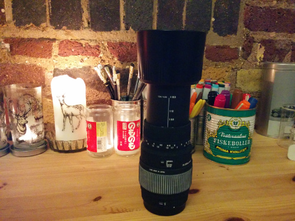
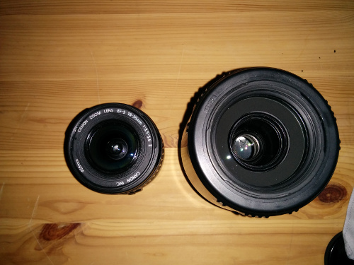
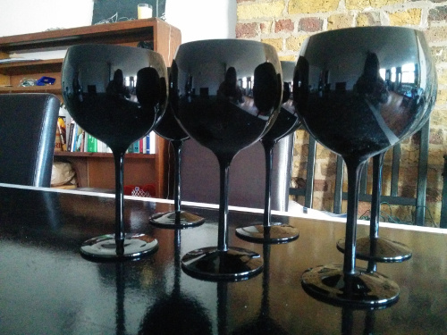
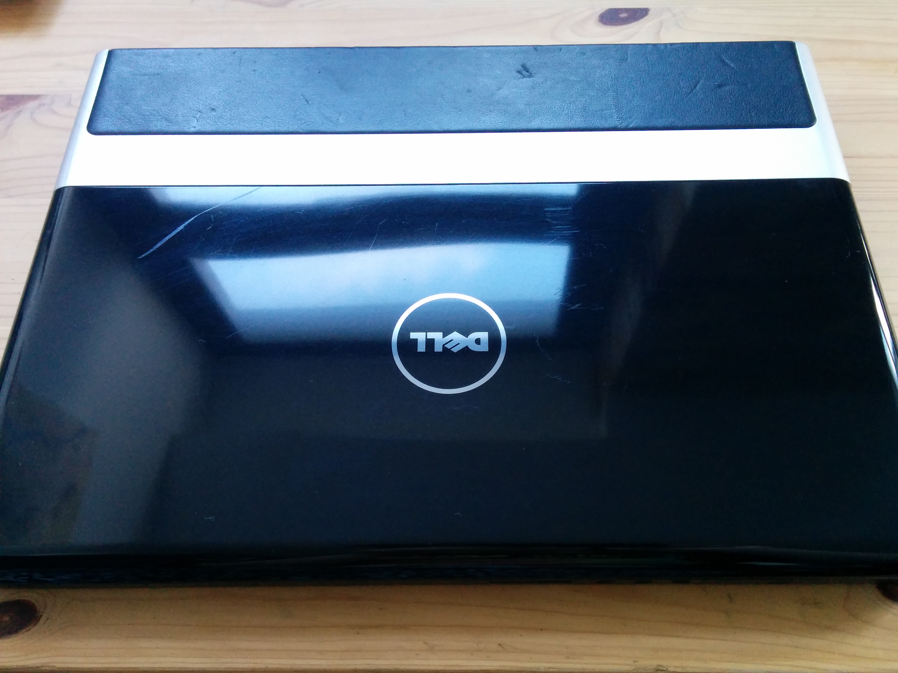
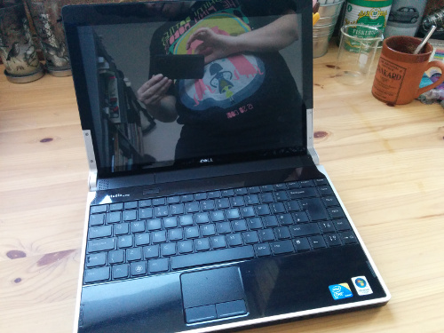
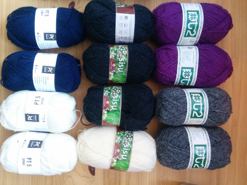

Brand new circuit scribe developer kit
I bought this to make cool paper electronics lessons for Code Club, but since that is not happening anymore get without having to wait for postage from the US. £120 ono. More info
Circuit Stickers deluxe kit plus extra add-ons
 New, unopnened. Cost $187 plus import vat. £150 ono. More info
Camera lenses
 Sigma DG 70-300mm 1:4-5:6 macro lens, and Canon EFS 18-55mm kit lens (for canon eos450d). No scratches.
6x large black wine glasses for your inner goth
used a couple of times, but not in the last 5 years. And I have limited bar space. They are larger than normal wine glasses. £30 ono. More info
Gaming laptop
 Studio XPS 13. 13.3 inch screen. 2.3Ghz 4.0GB RAM 320GB HDD. From 2011. Has scratches on the outside from being stored in a box for 2 years. Basically I got a mac for work just after getting this one so hardly used it :/ Dual boot Windows 7 and Ubuntu. Needs new battery but works fine plugged in. New batteries are about USD 30 and easy to replace (slots in)More info. £ 100 ono.
Wool
3x Sisu color 1088 (dark grey). 1x Sisu eggshell. 2x PT 5 sport dark blue, 2x PT 5 white. 2x PT 2 purple, 2x PT 2 grey.
Books
Also selling a bunch of books buy direct from me or on amazon
.